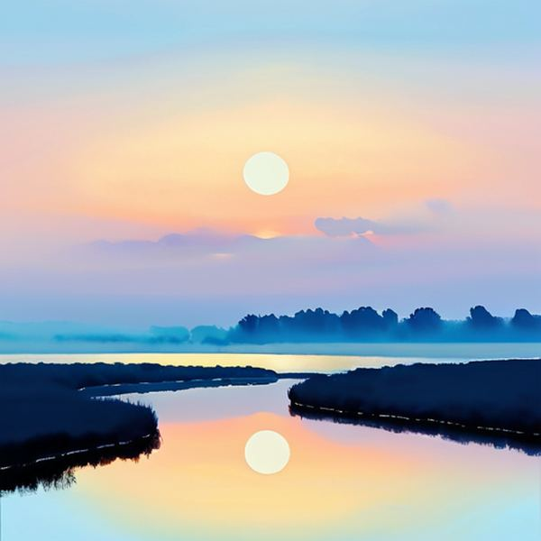
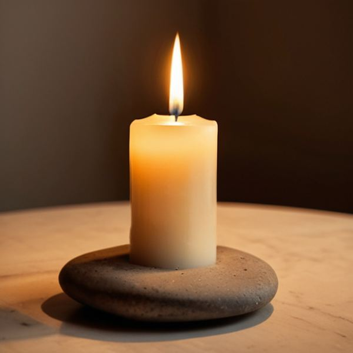
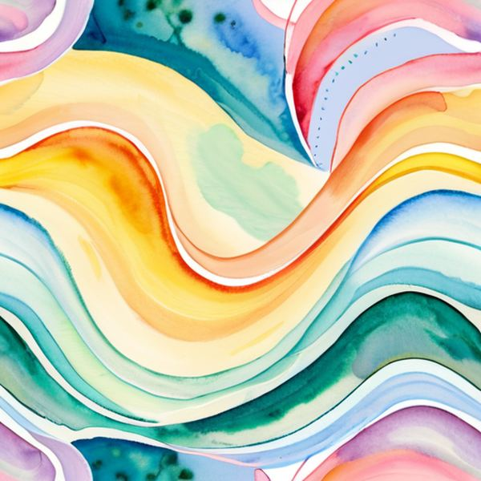
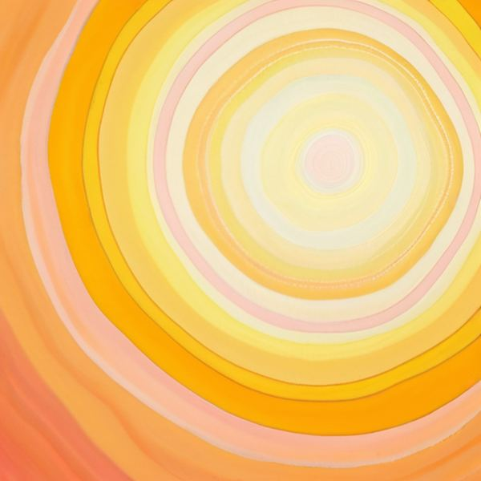
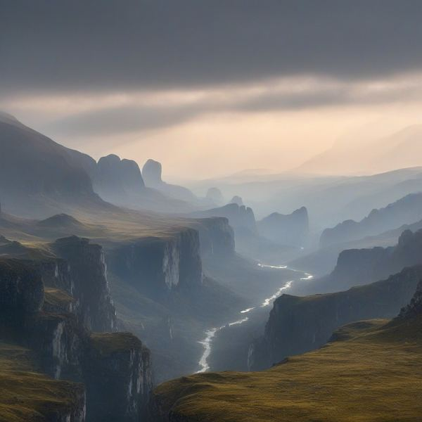
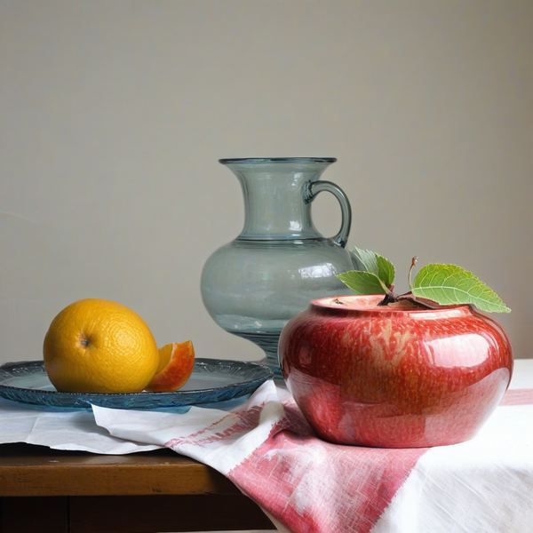

<title>Visual Directions</title>
<meta name="description" content="ComfyMind redesign: three visual directions compared side by side.">
<link rel="preconnect" href="https://fonts.googleapis.com">
<link rel="preconnect" href="https://fonts.gstatic.com" crossorigin>
<link href="https://fonts.googleapis.com/css2?family=Fraunces:opsz,wght@9..144,300..600&family=Atkinson+Hyperlegible:ital,wght@0,400;0,700;1,400&family=Literata:opsz,wght@7..72,400..700&family=Lexend:wght@300..700&family=DM+Sans:opsz,wght@9..40,400..700&display=swap" rel="stylesheet">
<style>
:root{
  --page:#F2EFE9; --page2:#E9E5DC; --card:#FFFFFF; --ink:#1D1B19; --ink2:#524D46; --line:#CFC9BD;
  --brand:#14202F; --brand-on:#F4F3F7; --focus:#0B57D0;
  --grain:url("data:image/svg+xml,%3Csvg xmlns='http://www.w3.org/2000/svg' width='220' height='220'%3E%3Cfilter id='n'%3E%3CfeTurbulence type='fractalNoise' baseFrequency='.85' numOctaves='2' stitchTiles='stitch'/%3E%3CfeColorMatrix values='0 0 0 0 .5 0 0 0 0 .5 0 0 0 0 .5 0 0 0 1.1 -.1'/%3E%3C/filter%3E%3Crect width='100%25' height='100%25' filter='url(%23n)'/%3E%3C/svg%3E");
  --chrome-font:'DM Sans',system-ui,sans-serif;
}
@media (prefers-color-scheme: dark){
  :root:not([data-theme="light"]){
    --page:#111214; --page2:#1A1C1F; --card:#1E2024; --ink:#EEEBE5; --ink2:#B7B2A9; --line:#3A3D42;
    --brand:#F0D5BF; --brand-on:#14202F; --focus:#8AB4F8;
  }
}
:root[data-theme="dark"]{
  --page:#111214; --page2:#1A1C1F; --card:#1E2024; --ink:#EEEBE5; --ink2:#B7B2A9; --line:#3A3D42;
  --brand:#F0D5BF; --brand-on:#14202F; --focus:#8AB4F8;
}
*{box-sizing:border-box}
html{-webkit-text-size-adjust:100%}
@media (prefers-reduced-motion:no-preference){html{scroll-behavior:smooth}}
body{margin:0;background:var(--page);color:var(--ink);font:400 18px/1.55 var(--chrome-font);overflow-x:hidden}
img{max-width:100%;display:block}
a{color:inherit}
:focus-visible{outline:3px solid var(--focus);outline-offset:3px;border-radius:4px}
.wrap{max-width:1280px;margin:0 auto;padding:0 16px}
@media(min-width:760px){.wrap{padding:0 32px}}

/* ---------- page chrome ---------- */
.topnav{position:sticky;top:env(safe-area-inset-top,0px);z-index:50;background:color-mix(in srgb,var(--page) 90%,transparent);backdrop-filter:blur(10px);border-bottom:1px solid var(--line)}
.topnav .wrap{display:flex;align-items:center;gap:8px;min-height:56px;overflow:hidden}
.topnav .mark{font-weight:700;letter-spacing:.02em;margin-right:auto;white-space:nowrap;font-size:16px}
.topnav a.pill{display:inline-flex;align-items:center;justify-content:center;min-height:44px;min-width:44px;padding:0 14px;border-radius:999px;text-decoration:none;font-weight:600;font-size:15px;border:1px solid var(--line);background:var(--card)}
.topnav a.pill:hover{border-color:var(--ink)}
.themebtn{min-height:44px;min-width:44px;border-radius:999px;border:1px solid var(--line);background:var(--card);color:var(--ink);font:600 15px var(--chrome-font);cursor:pointer;padding:0 12px}
.topnav .wrap{gap:6px}@media(max-width:560px){.topnav .mark{display:none}.topnav .wrap{justify-content:space-between}.themebtn span{display:none}}
.hero{padding:56px 0 40px;position:relative}
.hero .tiles{display:flex;margin-bottom:28px}
.hero .tiles i{width:56px;height:56px;border-radius:16px;margin-right:-14px;border:3px solid var(--page);box-shadow:0 6px 18px rgba(0,0,0,.18)}
.hero h1{font-size:clamp(36px,6.6vw,76px);line-height:1.04;letter-spacing:-.035em;margin:0 0 20px;font-weight:700}
.hero h1 span{color:var(--ink2);font-weight:400}
.hero .intro{font-size:clamp(18px,2.2vw,22px);max-width:60ch;color:var(--ink2);margin:0 0 6px}
.hero .intro strong{color:var(--ink);font-weight:600}
.rules{display:grid;grid-template-columns:repeat(auto-fit,minmax(min(100%,190px),1fr));gap:12px;margin-top:36px}
.rule{background:var(--card);border:1px solid var(--line);border-radius:18px;padding:18px 18px 16px}
.rule b{display:block;font-size:34px;line-height:1;letter-spacing:-.03em;margin-bottom:8px}
.rule span{font-size:15.5px;color:var(--ink2);line-height:1.4;display:block}
.rules-h{margin:44px 0 0;font-size:14px;letter-spacing:.14em;text-transform:uppercase;color:var(--ink2);font-weight:700}
.howto{margin-top:28px;font-size:16px;color:var(--ink2);max-width:70ch}
.howto code{font:inherit;font-weight:700;color:var(--ink)}

/* ---------- direction sections: fixed palettes ---------- */
.dir{position:relative;isolation:isolate;padding:72px 0 80px;overflow:hidden;color:var(--tx);font-family:var(--body);background:var(--bg)}
:where(.dir) h2,:where(.dir) h3,:where(.dir) h4{margin:0}
.dir .eyebrow{display:inline-flex;align-items:center;gap:10px;font:700 14px/1 var(--body);letter-spacing:.16em;text-transform:uppercase;color:var(--ac2)}
.dir .eyebrow b{display:inline-grid;place-items:center;width:34px;height:34px;border-radius:50%;background:var(--ac);color:var(--on-ac);font-size:16px;letter-spacing:0}
.dir h2.name{font-family:var(--disp);font-size:clamp(40px,7.5vw,88px);line-height:1;margin:18px 0 18px;font-weight:var(--dw);letter-spacing:var(--dls)}
.dir .concept{font-size:clamp(19px,2.4vw,26px);line-height:1.4;max-width:34em;color:var(--tx);margin:0 0 20px}
.moods{display:flex;flex-wrap:wrap;gap:8px;margin:0 0 44px;padding:0;list-style:none}
.moods li{padding:8px 16px;border-radius:999px;border:1.5px solid var(--line);font-size:16px;color:var(--tx2)}
.lab{font:700 14px/1.2 var(--body);letter-spacing:.14em;text-transform:uppercase;color:var(--ac2);margin:0 0 14px}
.grid2{display:grid;gap:28px;grid-template-columns:1fr;margin-bottom:56px}
@media(min-width:960px){.grid2{grid-template-columns:1fr 1fr;gap:40px}}
.panel{background:var(--panel);border:1.5px solid var(--line);border-radius:var(--r);padding:24px}
@media(max-width:480px){.panel{padding:18px}}
.pal{list-style:none;margin:0;padding:0;display:grid;grid-template-columns:repeat(auto-fill,minmax(132px,1fr));gap:10px}
.sw{background:var(--c);color:var(--t);min-height:104px;border-radius:12px;padding:12px;display:flex;flex-direction:column;justify-content:flex-end;box-shadow:inset 0 0 0 1px rgba(128,128,128,.4);line-height:1.25}
.sw b{font-size:15px}
.sw span{font:600 14px/1.3 ui-monospace,Menlo,Consolas,monospace;letter-spacing:.02em}
.sw i{font-style:normal;font-size:14px;opacity:.95}
.spec .sample-h{font-family:var(--disp);font-size:var(--hsize);line-height:1.1;font-weight:var(--dw);letter-spacing:var(--dls);margin:0 0 10px}
.spec .sample-sub{font-family:var(--disp);font-size:clamp(22px,3vw,28px);font-weight:var(--dw);margin:0 0 18px;color:var(--tx2)}
.spec .sample-b{font-size:18px;line-height:1.6;margin:0 0 18px;max-width:38em}
.spec .glyphs{font-size:18px;color:var(--tx2);border-top:1px dashed var(--line);padding-top:14px;margin-top:18px}
.sizes{display:flex;flex-wrap:wrap;gap:8px 10px;margin-top:16px;font-size:14.5px;color:var(--tx2)}
.sizes span{border:1.5px solid var(--line);border-radius:999px;padding:5px 12px}
.sizes b{color:var(--tx)}
.fontnote{font-size:15px;color:var(--tx2);margin:14px 0 0}

/* generic button used in specimens and mockups */
.b{display:inline-flex;align-items:center;justify-content:center;text-align:center;min-height:56px;padding:0 28px;font:700 18px/1.15 var(--body);border:2px solid transparent;cursor:default;user-select:none}
.b.full{width:100%}
.dir-a .b{border-radius:999px;background:var(--ac);color:var(--on-ac)}
.dir-b .b{border-radius:12px;background:var(--ac);color:var(--on-ac)}
.dir-c .b{border-radius:8px;background:var(--ac);color:var(--on-ac);font-family:var(--disp);font-weight:600;font-size:17px}

.mocks{display:grid;gap:34px;grid-template-columns:minmax(0,1fr);margin:6px 0 56px}
@media(min-width:1100px){.mocks{grid-template-columns:repeat(3,minmax(0,1fr));gap:26px}}
.mockwrap{width:100%;max-width:420px;margin:0 auto;display:flex;flex-direction:column}
.mocklabel{display:flex;align-items:baseline;justify-content:space-between;gap:8px;margin:0 0 12px;font-size:15px;color:var(--tx2)}
.mocklabel b{font:700 14px/1 var(--body);letter-spacing:.12em;text-transform:uppercase;color:var(--ac2)}
.mock{position:relative;isolation:isolate;overflow:hidden;min-height:700px;flex:1;display:flex;flex-direction:column;padding:24px 22px;width:100%}
.mock>*{position:relative;z-index:2}
.mock::before,.mock::after{content:"";position:absolute;inset:0;pointer-events:none}
.mock::before{z-index:0}
.mock::after{z-index:3}
.m-top{display:flex;align-items:center;justify-content:space-between;gap:10px;min-height:44px}
.m-lang{display:inline-flex;align-items:center;justify-content:center;min-height:44px;min-width:56px;padding:0 14px;font:700 15px var(--body)}
.m-av{width:44px;height:44px;border-radius:50%;display:grid;place-items:center;font:700 17px var(--body)}
.m-spacer{flex:1}
.m-nav{display:flex;gap:8px;margin-top:22px}
.m-nav span{flex:1;min-height:56px;display:flex;align-items:center;justify-content:center;text-align:center;font:700 16px/1.2 var(--body);padding:0 8px}
.m-copy{margin:0}
.noteline{margin:14px 0 0;font-size:14.5px;color:var(--tx2)}

/* tiny tags */
.tag56{display:inline-block;font:700 12.5px/1 var(--body);letter-spacing:.06em;padding:4px 8px;border-radius:6px;border:1.5px dashed currentColor;opacity:.9}

/* texture/shape/motion */
.trio{display:grid;gap:14px;grid-template-columns:repeat(3,minmax(0,1fr));margin:6px 0 18px}
.tile{aspect-ratio:1/1;border-radius:12px;position:relative;overflow:hidden;isolation:isolate;box-shadow:inset 0 0 0 1px rgba(128,128,128,.35)}
.tilecap{font-size:14px;line-height:1.3;color:var(--tx2);margin-top:8px}
.tilecap b{color:var(--tx);display:block;font-size:15px}
.textlist{margin:0;padding-left:1.1em;color:var(--tx2);font-size:16.5px}
.textlist li{margin-bottom:8px}
.textlist li::marker{color:var(--ac2)}
.shapes{display:flex;flex-wrap:wrap;gap:14px;align-items:flex-end;margin:6px 0 20px}
.shp{display:flex;flex-direction:column;gap:8px;font-size:14px;color:var(--tx2)}
.shp .demo{display:grid;place-items:center;font:700 15px var(--body)}
.defs{display:grid;gap:12px;margin:0;font-size:16.5px;color:var(--tx2)}
.defs dt{font-weight:700;color:var(--tx);font-size:15px}
.defs dd{margin:0 0 4px}
.motion{border-left:4px solid var(--ac);padding:4px 0 4px 16px;font-size:16.5px;color:var(--tx2);margin:6px 0 0}
.motion b{display:block;color:var(--tx);font-size:15px;margin-bottom:4px}
.why h3,.risk h3{font:700 14px/1.2 var(--body);letter-spacing:.14em;text-transform:uppercase;margin-bottom:12px}
.why h3{color:var(--good)}
.risk h3{color:var(--warn)}
.why li,.risk li{font-size:17px;color:var(--tx);margin-bottom:10px;line-height:1.5}
.why ul,.risk ul{margin:0;padding-left:1.1em}
.why li::marker{color:var(--good)} .risk li::marker{color:var(--warn)}
.why,.risk{margin-bottom:0}

/* ======== A ATMOSPHERIC SANCTUARY ======== */
.dir-a{--bg:#14202F;--panel:rgba(31,49,64,.78);--tx:#F4F3F7;--tx2:#C9CEDA;--ac:#F0D5BF;--ac2:#7FC4C4;--on-ac:#14202F;--line:rgba(201,206,218,.3);--r:16px;--disp:'Fraunces',Georgia,serif;--body:'Atkinson Hyperlegible',system-ui,sans-serif;--dw:400;--dls:-.01em;--hsize:clamp(34px,5vw,48px);--good:#7FC4C4;--warn:#F0D5BF;
  background:linear-gradient(180deg,#101827 0%,#14202F 30%,#172d3a 70%,#2a3148 100%)}
.dir-a::before{content:"";position:absolute;inset:0;z-index:-1;background:
  radial-gradient(48% 30% at 14% 8%,rgba(127,196,196,.20),transparent 70%),
  radial-gradient(52% 34% at 92% 40%,rgba(185,175,214,.20),transparent 70%),
  radial-gradient(70% 22% at 40% 100%,rgba(240,213,191,.20),transparent 70%)}
.dir-a::after{content:"";position:absolute;inset:0;z-index:-1;background-image:var(--grain);opacity:.05;mix-blend-mode:screen;pointer-events:none}
.dir-a .m-lang{border-radius:999px;border:1.5px solid rgba(244,243,247,.4);color:#F4F3F7;background:rgba(20,32,47,.55)}
.dir-a .b.alt{background:transparent;color:#F4F3F7;border-color:#8FA0B8}
.dir-a .sw b{font-family:var(--body)}
.a-mock{border-radius:28px;color:#F4F3F7;background:linear-gradient(172deg,#101827 0%,#172d3a 52%,#413f59 100%);box-shadow:0 0 0 1px rgba(244,243,247,.14),0 30px 60px rgba(0,0,0,.35)}
.a-mock::before{background:
  radial-gradient(60% 34% at 18% 16%,rgba(127,196,196,.30),transparent 72%),
  radial-gradient(70% 38% at 90% 52%,rgba(185,175,214,.32),transparent 72%),
  radial-gradient(90% 30% at 30% 100%,rgba(240,213,191,.38),transparent 70%)}
.a-mock::after{background-image:var(--grain);opacity:.055;mix-blend-mode:screen}
.a-brand{font:700 15px var(--body);letter-spacing:.18em;text-transform:uppercase;color:#F0D5BF}
.a-h1{font:400 clamp(36px,10vw,42px)/1.08 var(--disp);letter-spacing:-.012em;margin:0 0 16px}
.a-p{font-size:18px;line-height:1.6;color:#C9CEDA;margin:0 0 26px}
.a-btns{display:grid;gap:12px}
.a-card{background:rgba(31,49,64,.92);border:1.5px solid rgba(201,206,218,.28);border-radius:16px;padding:20px}
.a-kick{font:700 14px var(--body);letter-spacing:.14em;text-transform:uppercase;color:#7FC4C4;margin:0 0 8px}
.a-create{display:block;background:#F0D5BF;color:#14202F;border-radius:28px;padding:30px 26px;box-shadow:0 0 50px rgba(240,213,191,.22);margin:26px 0 18px}
.a-create b{display:block;font:400 44px/1 var(--disp);margin-bottom:10px}
.a-create span{font-size:18px;line-height:1.4;display:block}
.a-nav span{border-radius:999px;color:#C9CEDA}
.a-nav span.on{background:rgba(244,243,247,.12);color:#F4F3F7;border:1.5px solid rgba(244,243,247,.3)}
.a-art{border-radius:16px;overflow:hidden;box-shadow:0 0 60px rgba(240,213,191,.20),0 0 0 1.5px rgba(244,243,247,.2);margin:22px 0 22px;aspect-ratio:1/1}
.a-art img{width:100%;height:100%;object-fit:cover}

/* ======== B PAPER STUDIO ======== */
.dir-b{--bg:#F7F1E7;--panel:#FFFBF4;--tx:#2B2622;--tx2:#5A5047;--ac:#8F4A2E;--ac2:#8F4A2E;--on-ac:#FFFBF4;--line:rgba(90,80,71,.42);--r:12px;--disp:'Literata',Georgia,serif;--body:'Atkinson Hyperlegible',system-ui,sans-serif;--dw:500;--dls:-.015em;--hsize:clamp(32px,4.6vw,44px);--good:#3F6B5C;--warn:#8F4A2E;
  background:#F7F1E7}
.dir-b::before{content:"";position:absolute;inset:0;z-index:-1;background:
  radial-gradient(40% 24% at 88% 4%,rgba(143,74,46,.18),transparent 72%),
  radial-gradient(34% 22% at 6% 30%,rgba(63,107,92,.14),transparent 72%),
  radial-gradient(50% 20% at 70% 98%,rgba(214,170,90,.22),transparent 72%)}
.dir-b::after{content:"";position:absolute;inset:0;z-index:-1;background-image:var(--grain);opacity:.12;mix-blend-mode:multiply;pointer-events:none}
.dir-b .panel{box-shadow:0 1px 0 rgba(43,38,34,.08),0 8px 24px rgba(43,38,34,.06)}
.dir-b .b.alt{background:transparent;color:#2B2622;border-color:#5A5047}
.dir-b .b.sage{background:#3F6B5C;color:#FFFBF4}
.dir-b .m-lang{border-radius:10px;border:2px solid #5A5047;color:#2B2622;background:#FFFBF4}
.b-mock{border-radius:18px;background:#F7F1E7;color:#2B2622;box-shadow:0 0 0 1px rgba(90,80,71,.3),0 1px 0 rgba(43,38,34,.08),0 26px 50px rgba(43,38,34,.18)}
.b-mock::before{background:
  radial-gradient(70% 28% at 92% 2%,rgba(143,74,46,.30),transparent 72%),
  radial-gradient(52% 24% at 4% 26%,rgba(63,107,92,.22),transparent 72%),
  radial-gradient(62% 22% at 30% 12%,rgba(214,170,90,.22),transparent 74%),
  radial-gradient(80% 24% at 60% 100%,rgba(214,170,90,.34),transparent 72%)}
.b-mock::after{background-image:var(--grain);opacity:.14;mix-blend-mode:multiply}
.b-brand{font:600 21px var(--disp);letter-spacing:-.01em}
.b-h1{font:500 clamp(34px,9.6vw,38px)/1.12 var(--disp);letter-spacing:-.018em;margin:0 0 14px}
.b-p{font-size:18px;line-height:1.6;color:#5A5047;margin:0 0 24px}
.b-print{background:#FFFBF4;padding:10px 10px 12px;border:1px solid rgba(90,80,71,.28);box-shadow:0 1px 0 rgba(43,38,34,.08),0 10px 24px rgba(43,38,34,.14);transform:rotate(-2.2deg);width:62%;margin:22px 0 22px auto;border-radius:3px}
.b-print img{aspect-ratio:1/1;object-fit:cover;width:100%;border-radius:1px}
.b-print figcaption{font:italic 400 15px var(--body);color:#5A5047;padding-top:8px}
.b-sprig{position:absolute!important;left:14px;top:96px;width:64px;height:auto;opacity:.65}
.b-create{display:block;position:relative;overflow:hidden;background:#8F4A2E;color:#FFFBF4;border-radius:14px;padding:30px 26px;margin:26px 0 18px;box-shadow:0 1px 0 rgba(43,38,34,.2),0 14px 28px rgba(143,74,46,.28)}
.b-create::before{content:"";position:absolute;inset:0;background:radial-gradient(60% 90% at 100% 0%,rgba(240,190,140,.35),transparent 70%),radial-gradient(50% 70% at 0% 110%,rgba(63,107,92,.35),transparent 70%)}
.b-create b,.b-create span{position:relative;display:block}
.b-create b{font:500 44px/1 var(--disp);margin-bottom:10px;letter-spacing:-.02em}
.b-create span{font-size:18px;line-height:1.4}
.b-card{background:#FFFBF4;border:1px solid rgba(90,80,71,.35);border-radius:12px;padding:18px;box-shadow:0 1px 0 rgba(43,38,34,.08),0 8px 24px rgba(43,38,34,.06);display:flex;gap:16px;align-items:center}
.b-leaf{flex:none;width:68px;border-radius:8px;overflow:hidden;text-align:center;background:#FFFBF4;border:2px solid #3F6B5C}
.b-leaf em{display:block;background:#3F6B5C;color:#FFFBF4;font:700 14px/1 var(--body);letter-spacing:.1em;padding:6px 0;font-style:normal}
.b-leaf b{display:block;font:500 32px/1.2 var(--disp);color:#2B2622;padding:4px 0 6px}
.b-nav span{color:#5A5047;border-radius:12px}
.b-nav span.on{background:#E6D9C3;color:#2B2622;border:2px solid #5A5047}
.b-kick{font:700 14px var(--body);letter-spacing:.12em;text-transform:uppercase;color:#3F6B5C;margin:0 0 6px}
.b-mat{background:#FFFBF4;padding:16px 16px 14px;border:1px solid rgba(90,80,71,.3);box-shadow:0 1px 0 rgba(43,38,34,.08),0 14px 30px rgba(43,38,34,.16);border-radius:3px;margin:22px 0 22px}
.b-mat img{aspect-ratio:1/1;object-fit:cover;width:100%}
.b-mat figcaption{font:italic 400 15px var(--body);color:#5A5047;padding-top:10px;display:flex;justify-content:space-between}

/* ======== C GALLERY WALL ======== */
.dir-c{--bg:#F5F5F3;--panel:#FFFFFF;--tx:#1B1C1E;--tx2:#53565B;--ac:#2F5D8A;--ac2:#2F5D8A;--on-ac:#FFFFFF;--line:#C9CBCE;--r:8px;--disp:'Lexend',system-ui,sans-serif;--body:'Atkinson Hyperlegible',system-ui,sans-serif;--dw:600;--dls:-.02em;--hsize:clamp(30px,4.2vw,40px);--good:#2E6B3F;--warn:#A32D2D;background:#F5F5F3}
.dir-c .b.alt{background:#fff;color:#1B1C1E;border-color:#6B6F75}
.dir-c .b.ink{background:#1B1C1E;color:#fff}
.dir-c .m-lang{border-radius:8px;border:1.5px solid #6B6F75;color:#1B1C1E;background:#fff}
.c-mock{border-radius:14px;background:#F5F5F3;color:#1B1C1E;box-shadow:0 0 0 1px #C9CBCE}
.c-brand{font:600 18px var(--disp);letter-spacing:-.01em}
.c-rule{height:1px;background:#C9CBCE;margin:14px 0 20px;border:0}
.c-mat{background:#fff;border:1px solid #D4D5D7;border-radius:12px;padding:26px 26px 16px}
.c-mat img{aspect-ratio:4/3.2;object-fit:cover;width:100%}
.c-label{font-size:14.5px;line-height:1.4;color:#53565B;padding-top:12px}
.c-label b{display:block;color:#1B1C1E;font:600 15.5px var(--disp)}
.c-h1{font:600 clamp(30px,8.4vw,34px)/1.12 var(--disp);letter-spacing:-.025em;margin:22px 0 12px}
.c-p{font-size:18px;line-height:1.6;color:#53565B;margin:0 0 22px}
.c-create{display:block;background:#2F5D8A;color:#fff;border-radius:8px;padding:28px 24px;margin:22px 0 18px}
.c-create b{display:block;font:600 40px/1 var(--disp);letter-spacing:-.03em;margin-bottom:10px}
.c-create span{font-size:18px;line-height:1.4;display:block}
.c-card{background:#fff;border:1.5px solid #C9CBCE;border-radius:8px;padding:18px 20px;margin-bottom:14px}
.c-kick{font:600 13.5px var(--disp);letter-spacing:.1em;text-transform:uppercase;color:#53565B;margin:0 0 8px}
.c-nav span{color:#53565B;border-radius:8px}
.c-nav span.on{color:#1B1C1E;border-bottom:3px solid #2F5D8A;border-radius:0}
.c-stage{background:#26282B;border-radius:12px;padding:30px 28px 22px;margin:20px 0 20px}
.c-stage .mat{background:#fff;padding:18px}
.c-stage img{aspect-ratio:1/1;object-fit:cover;width:100%}
.c-stage .cap{color:#ECECEA;font-size:14.5px;padding-top:14px;line-height:1.4}
.c-stage .cap b{display:block;font:600 15.5px var(--disp)}
.c-copy{font:600 22px/1.3 var(--disp);letter-spacing:-.015em;margin:0 0 6px}
.c-sub{color:#53565B;font-size:17px;margin:0 0 18px}
.c-thumb{display:flex;gap:14px;align-items:center}
.c-thumb .mat{flex:none;width:76px;background:#fff;padding:6px;border:1px solid #D4D5D7}
.c-thumb img{aspect-ratio:1/1;object-fit:cover;width:100%}

/* result-screen shared */
.res-copy{margin:0 0 6px}
.a-copy{font:400 26px/1.25 var(--disp);color:#F4F3F7;margin:0 0 6px}
.a-sub{font-size:17px;color:#C9CEDA;margin:0 0 20px}
.b-copy{font:500 26px/1.25 var(--disp);color:#2B2622;margin:0 0 6px;letter-spacing:-.015em}
.b-sub{font-size:17px;color:#5A5047;margin:0 0 20px}
.stack{display:grid;gap:12px;margin-top:auto}

/* ---------- comparison ---------- */
.compare{padding:72px 0 40px}
.compare h2{font-size:clamp(30px,5vw,52px);letter-spacing:-.03em;line-height:1.05;margin:0 0 12px}
.compare .lead{color:var(--ink2);margin:0 0 28px;max-width:56ch}
table{width:100%;border-collapse:separate;border-spacing:0;background:var(--card);border:1px solid var(--line);border-radius:18px;overflow:hidden;font-size:16.5px}
th,td{padding:16px 18px;text-align:left;vertical-align:top;border-bottom:1px solid var(--line);line-height:1.45}
tr:last-child th,tr:last-child td{border-bottom:0}
thead th{font-size:15px;letter-spacing:.04em}
thead th .dot{display:inline-block;width:12px;height:12px;border-radius:50%;margin-right:8px;vertical-align:-1px}
tbody th{font-weight:700;width:18%;color:var(--ink2);font-size:15px;letter-spacing:.06em;text-transform:uppercase}
td strong{display:block}
td .meter{display:flex;gap:4px;margin-bottom:6px}
td .meter i{width:22px;height:8px;border-radius:4px;background:var(--line)}
td .meter i.on{background:var(--ink)}
.cta{margin-top:32px;padding:22px 24px;border-radius:18px;background:var(--brand);color:var(--brand-on);font-size:19px;line-height:1.45}
.cta b{font-weight:700}
.foot{padding:30px 0 60px;font-size:15px;color:var(--ink2);max-width:80ch}
@media(max-width:759px){
  table,thead,tbody,tr,th,td{display:block;width:100%}
  thead{display:none}
  tr{border-bottom:1px solid var(--line);padding:6px 0}
  tr:last-child{border-bottom:0}
  th,td{border:0;padding:6px 18px}
  tbody th{width:100%;padding-top:14px}
  td::before{content:attr(data-d);display:block;font:700 13.5px var(--chrome-font);letter-spacing:.08em;text-transform:uppercase;color:var(--ink2);margin-bottom:2px}
}
</style>

<nav class="topnav" aria-label="Sections">
  <div class="wrap">
    <span class="mark">ComfyMind</span>
    <a class="pill" href="#a">A</a>
    <a class="pill" href="#b">B</a>
    <a class="pill" href="#c">C</a>
    <a class="pill" href="#compare">Compare</a>
    <button class="themebtn" id="themebtn" type="button" aria-label="Toggle page light or dark"><svg width="18" height="18" viewBox="0 0 18 18" aria-hidden="true" style="vertical-align:-3px"><circle cx="9" cy="9" r="7" fill="none" stroke="currentColor" stroke-width="2"/><path d="M9 2a7 7 0 0 1 0 14z" fill="currentColor"/></svg><span> Light/Dark</span></button>
  </div>
</nav>

<header class="hero">
  <div class="wrap">
    <div class="tiles" aria-hidden="true">
      <i style="background:linear-gradient(160deg,#14202F,#413f59 70%,#F0D5BF)"></i>
      <i style="background:linear-gradient(160deg,#F7F1E7,#E6D9C3 55%,#8F4A2E)"></i>
      <i style="background:linear-gradient(160deg,#F5F5F3,#fff 50%,#2F5D8A)"></i>
    </div>
    <h1>ComfyMind <span>— Visual directions</span></h1>
    <p class="intro"><strong>Three ways the app could look and feel,</strong> each shown below on three real sample screens, in its own style, with its own fonts and colours.</p>
    <p class="intro">Scroll, compare, and tell us which one (or which mix) feels right for someone sitting down to create in a session.</p>

    <p class="rules-h">Shared by all three, non-negotiable</p>
    <div class="rules">
      <div class="rule"><b>56 px</b><span>Minimum size of every primary button and target, for tremor and fatigue.</span></div>
      <div class="rule"><b>AA+</b><span>Contrast at least AA everywhere, and AAA for body text. Never colour alone.</span></div>
      <div class="rule"><b>0 timers</b><span>No message disappears by itself. People dismiss things at their own pace.</span></div>
      <div class="rule"><b>Still</b><span>Reduced motion is honoured. Nothing essential moves, flashes or parallaxes.</span></div>
      <div class="rule"><b>ES · CA · EN</b><span>Spanish, Catalan and English, with the l·l and accents tested in every font.</span></div>
    </div>
    <p class="howto">The mock screens below are not clickable. They are drawn in HTML and CSS only, so you see real type and real colour. The sample language changes per direction (A Catalan, B Spanish, C English) just to show all three. <code>Fonts:</code> served from Google Fonts here. Where the research named <em>Atkinson Hyperlegible Next</em> we use <em>Atkinson Hyperlegible</em> (closest available, same design). The real app would self-host the fonts.</p>
  </div>
</header>

<!-- =================== A =================== -->
<section class="dir dir-a" id="a" aria-labelledby="a-title">
  <div class="wrap">
    <span class="eyebrow"><b>A</b> Direction</span>
    <h2 class="name" id="a-title">Atmospheric Sanctuary</h2>
    <p class="concept">The room before you begin: a quiet twilight sky you can sit under while you decide what to make.</p>
    <ul class="moods" aria-label="Mood"><li>hushed</li><li>spacious</li><li>twilight</li><li>private</li><li>slow</li><li>contemplative</li></ul>

    <div class="grid2">
      <div class="panel">
        <h3 class="lab">Palette</h3>
        <ul class="pal">
          <li class="sw" style="--c:#14202F;--t:#F4F3F7"><b>Deep sky</b><span>#14202F</span><i>Page background</i></li>
          <li class="sw" style="--c:#1F3140;--t:#F4F3F7"><b>Surface</b><span>#1F3140</span><i>Cards, panels</i></li>
          <li class="sw" style="--c:#F4F3F7;--t:#14202F"><b>Text</b><span>#F4F3F7</span><i>14.9:1 on sky</i></li>
          <li class="sw" style="--c:#C9CEDA;--t:#14202F"><b>Text soft</b><span>#C9CEDA</span><i>10.4:1 on sky</i></li>
          <li class="sw" style="--c:#F0D5BF;--t:#14202F"><b>Warm light</b><span>#F0D5BF</span><i>Primary button</i></li>
          <li class="sw" style="--c:#7FC4C4;--t:#14202F"><b>Teal</b><span>#7FC4C4</span><i>Links, selected</i></li>
          <li class="sw" style="--c:#B9AFD6;--t:#14202F"><b>Twilight violet</b><span>#B9AFD6</span><i>Tags, highlights</i></li>
          <li class="sw" style="--c:#FFE3A3;--t:#14202F"><b>Focus ring</b><span>#FFE3A3</span><i>13.1:1 on sky</i></li>
        </ul>
      </div>
      <div class="panel spec">
        <h3 class="lab">Type · Fraunces + Atkinson Hyperlegible</h3>
        <p class="sample-h">Benvinguda a la teva sessió</p>
        <p class="sample-sub">Il·lusió, llum i color</p>
        <p class="sample-b">¿Qué te gustaría crear hoy? Puedes tomarte tu tiempo; aquí no hay una forma correcta de hacerlo.</p>
        <span class="b">Començar a crear</span>
        <div class="sizes"><span>Heading <b>44–48 px</b> · Fraunces 400</span><span>Body <b>18 px</b> · Atkinson</span><span>Button <b>18 px bold</b> · 56 px tall</span></div>
        <p class="glyphs">Col·legi, paral·lel, ànima, cançó, any, ¿Qué?</p>
        <p class="fontnote">Substitution: Atkinson Hyperlegible Next shown as Atkinson Hyperlegible.</p>
      </div>
    </div>

    <h3 class="lab">Three screens, drawn in this style</h3>
    <div class="mocks">
      <!-- i landing -->
      <div class="mockwrap">
        <div class="mocklabel"><b>i · Landing</b><span>Català</span></div>
        <div class="mock a-mock">
          <div class="m-top"><span class="a-brand">ComfyMind</span><span class="m-lang">CA ▾</span></div>
          <div class="m-spacer"></div>
          <h4 class="a-h1">Benvinguda a la teva sessió</h4>
          <p class="a-p">Un espai tranquil per explorar el que sents a través del color i la imatge. Pots anar al teu ritme.</p>
          <div class="a-btns"><span class="b full">Començar</span><span class="b full alt">Ja tinc compte</span></div>
          <p class="m-copy" style="margin-top:22px;font-size:15px;color:#C9CEDA;text-align:center">Aquí no hi ha cap forma correcta de crear.</p>
        </div>
      </div>
      <!-- ii home -->
      <div class="mockwrap">
        <div class="mocklabel"><b>ii · Patient home</b><span>Català</span></div>
        <div class="mock a-mock">
          <div class="m-top"><span class="a-brand">ComfyMind</span><span class="m-av" style="background:#B9AFD6;color:#14202F">M</span></div>
          <h4 style="font:400 34px/1.1 var(--disp);margin:34px 0 8px">Bon dia, Marta</h4>
          <p style="margin:0;font-size:18px;color:#C9CEDA">Avui no cal fer res en particular.</p>
          <div class="a-create"><b>Crear</b><span>Comença amb una idea, un color o una sensació.</span></div>
          <div class="a-card">
            <p class="a-kick">Propera sessió</p>
            <p style="margin:0 0 2px;font:400 24px/1.25 var(--disp)">Dijous 28 de novembre</p>
            <p style="margin:0;font-size:18px;color:#C9CEDA">11:00 · amb la Dra. Puig</p>
          </div>
          <div class="m-spacer"></div>
          <div class="m-nav a-nav"><span class="on">Inici</span><span>Les meves obres</span></div>
        </div>
      </div>
      <!-- iii result -->
      <div class="mockwrap">
        <div class="mocklabel"><b>iii · Creation result</b><span>Català</span></div>
        <div class="mock a-mock">
          <div class="m-top"><span class="a-brand">Crear</span><span class="tag56" style="color:#F0D5BF">botons 56 px</span></div>
          <figure class="a-art" style="margin-inline:0"></figure>
          <p class="a-copy">Aquesta és la teva imatge.</p>
          <p class="a-sub">Què et desperta?</p>
          <div class="stack">
            <span class="b full">Desar</span>
            <span class="b full alt">Provar una variació</span>
            <span class="b full alt">Anotar un pensament</span>
          </div>
        </div>
      </div>
    </div>

    <div class="grid2">
      <div class="panel">
        <h3 class="lab">Texture and imagery</h3>
        <div class="trio">
          <div><div class="tile" style="background:linear-gradient(172deg,#101827,#172d3a 55%,#413f59)"><div style="position:absolute;inset:0;background:radial-gradient(60% 40% at 20% 20%,rgba(127,196,196,.45),transparent 70%),radial-gradient(70% 45% at 85% 60%,rgba(185,175,214,.45),transparent 70%)"></div></div><p class="tilecap"><b>Mist</b>layered radial gradients</p></div>
          <div><div class="tile" style="background:#14202F"><div style="position:absolute;inset:0;background-image:var(--grain);opacity:.4;mix-blend-mode:screen"></div></div><p class="tilecap"><b>Film grain</b>SVG noise, ~4%</p></div>
          <div><div class="tile" style="background:linear-gradient(0deg,#F0D5BF,#B9AFD6 30%,#1F3140 75%,#14202F)"></div><p class="tilecap"><b>Twilight sky</b>distant warm light</p></div>
        </div>
        <ul class="textlist"><li>The patient's artwork is the only strongly coloured thing in the app.</li><li>Translucent panels only on calm areas, never behind text without a 90% scrim.</li></ul>
      </div>
      <div class="panel">
        <h3 class="lab">Shape language</h3>
        <div class="shapes">
          <div class="shp"><div class="demo" style="width:150px;height:84px;border-radius:16px;background:#1F3140;border:1.5px solid rgba(244,243,247,.3);color:#F4F3F7">Card · 16</div></div>
          <div class="shp"><div class="demo" style="width:150px;height:56px;border-radius:999px;background:#F0D5BF;color:#14202F;box-shadow:0 0 40px rgba(240,213,191,.2)">Pill · 999</div></div>
          <div class="shp"><div class="demo" style="width:150px;height:56px;border-radius:12px;border:2px solid #8FA0B8;color:#C9CEDA;font-weight:400">Input · 12</div></div>
        </div>
        <p class="noteline" style="margin:0 0 14px">Depth comes from translucency and a soft glow, not drop shadows. Borders 1.5 px.</p>
        <div class="motion"><b>Motion</b>Pointer parallax only on the landing, 10 px at most, off on touch and for reduced motion. Waiting = slowly breathing mist (6 s, ±8%), a still image if motion is reduced.</div>
      </div>
    </div>

    <div class="grid2" style="margin-bottom:0">
      <div class="panel why"><h3>Why this fits art therapy</h3><ul>
        <li>The sky works as a safe container: it holds the session and nothing competes with the person.</li>
        <li>It continues the Welcome screen the team already built, so first impression and app are one world.</li>
        <li>Only the person's artwork carries strong colour, so the work stays the centre.</li></ul></div>
      <div class="panel risk"><h3>Risks</h3><ul>
        <li>Dark UI can glare on tablets in bright rooms and tire low-vision eyes, so a light variant is needed.</li>
        <li>Easy to slip into sci-fi or "AI" cliché. Parallax can upset people with double vision or vertigo, so keep it optional.</li></ul></div>
    </div>
  </div>
</section>

<!-- =================== B =================== -->
<section class="dir dir-b" id="b" aria-labelledby="b-title">
  <div class="wrap">
    <span class="eyebrow"><b>B</b> Direction</span>
    <h2 class="name" id="b-title">Paper Studio</h2>
    <p class="concept">A tidy table in north light: warm paper, ink, clay and a little watercolour, where the app is the sheet and the work is on the table.</p>
    <ul class="moods" aria-label="Mood"><li>warm</li><li>grounded</li><li>tactile</li><li>human</li><li>unhurried</li><li>crafted</li></ul>

    <div class="grid2">
      <div class="panel">
        <h3 class="lab">Palette</h3>
        <ul class="pal">
          <li class="sw" style="--c:#F7F1E7;--t:#2B2622"><b>Paper</b><span>#F7F1E7</span><i>Page background</i></li>
          <li class="sw" style="--c:#FFFBF4;--t:#2B2622"><b>Card</b><span>#FFFBF4</span><i>Cards, sheets</i></li>
          <li class="sw" style="--c:#E6D9C3;--t:#2B2622"><b>Wash</b><span>#E6D9C3</span><i>Soft fills, selected</i></li>
          <li class="sw" style="--c:#2B2622;--t:#F7F1E7"><b>Ink</b><span>#2B2622</span><i>13.3:1 on paper</i></li>
          <li class="sw" style="--c:#5A5047;--t:#FFFBF4"><b>Ink soft</b><span>#5A5047</span><i>7.0:1, input borders</i></li>
          <li class="sw" style="--c:#8F4A2E;--t:#FFFBF4"><b>Clay</b><span>#8F4A2E</span><i>Primary button</i></li>
          <li class="sw" style="--c:#3F6B5C;--t:#FFFBF4"><b>Sage</b><span>#3F6B5C</span><i>Secondary, progress</i></li>
          <li class="sw" style="--c:#1F4E79;--t:#FFFBF4"><b>Blue ink</b><span>#1F4E79</span><i>Links, focus</i></li>
          <li class="sw" style="--c:#8C8174;--t:#FFFBF4"><b>Border</b><span>#8C8174</span><i>Decorative cards</i></li>
        </ul>
      </div>
      <div class="panel spec">
        <h3 class="lab">Type · Literata + Atkinson Hyperlegible</h3>
        <p class="sample-h">Benvinguda a la teva sessió</p>
        <p class="sample-sub">Il·lusió, llum i color</p>
        <p class="sample-b">¿Qué te gustaría crear hoy? Puedes tomarte tu tiempo; aquí no hay una forma correcta de hacerlo.</p>
        <span class="b">Empezar a crear</span>
        <div class="sizes"><span>Heading <b>40–44 px</b> · Literata 500</span><span>Body <b>18 px</b> · Atkinson</span><span>Button <b>18 px bold</b> · 56 px tall</span></div>
        <p class="glyphs">Col·legi, paral·lel, ànima, cançó, any, ¿Qué?</p>
        <p class="fontnote">Serif only for headings of 24 px and up. Substitution: Atkinson Hyperlegible Next shown as Atkinson Hyperlegible.</p>
      </div>
    </div>

    <h3 class="lab">Three screens, drawn in this style</h3>
    <div class="mocks">
      <div class="mockwrap">
        <div class="mocklabel"><b>i · Landing</b><span>Español</span></div>
        <div class="mock b-mock">
          <svg class="b-sprig" viewBox="0 0 64 120" fill="none" stroke="#3F6B5C" stroke-width="1.6" stroke-linecap="round" aria-hidden="true"><path d="M32 118C30 84 34 52 30 6"/><path d="M31 96c-14-2-22-12-24-24 14 0 22 10 24 24z"/><path d="M31 70c14-2 22-12 24-24-14 0-22 10-24 24z"/><path d="M30 46c-12-2-18-10-20-20 12 0 18 8 20 20z"/><path d="M30 24c9-2 14-8 16-16-10 0-14 6-16 16z"/></svg>
          <div class="m-top"><span class="b-brand">ComfyMind</span><span class="m-lang">ES ▾</span></div>
          <figure class="b-print" style="margin-inline:auto 0"><figcaption>una luz pequeña</figcaption></figure>
          <h4 class="b-h1">Te damos la bienvenida a tu espacio creativo</h4>
          <p class="b-p">Un lugar tranquilo para explorar lo que sientes con color e imagen, a tu ritmo.</p>
          <div class="a-btns" style="margin-top:auto"><span class="b full">Empezar</span><span class="b full alt">Ya tengo cuenta</span></div>
        </div>
      </div>
      <div class="mockwrap">
        <div class="mocklabel"><b>ii · Patient home</b><span>Español</span></div>
        <div class="mock b-mock">
          <div class="m-top"><span class="b-brand">ComfyMind</span><span class="m-av" style="background:#3F6B5C;color:#FFFBF4">M</span></div>
          <h4 style="font:500 34px/1.12 var(--disp);margin:34px 0 8px;letter-spacing:-.018em">Buenos días, Marta</h4>
          <p style="margin:0;font-size:18px;color:#5A5047">Hoy no hace falta hacer nada en particular.</p>
          <div class="b-create"><b>Crear</b><span>Empieza con una idea, un color o una sensación.</span></div>
          <div class="b-card">
            <div class="b-leaf"><em>NOV</em><b>28</b></div>
            <div><p class="b-kick">Próxima sesión</p><p style="margin:0;font:500 20px/1.3 var(--disp)">Jueves, 11:00</p><p style="margin:0;font-size:17px;color:#5A5047">con la Dra. Puig</p></div>
          </div>
          <div class="m-spacer"></div>
          <div class="m-nav b-nav"><span class="on">Inicio</span><span>Mis obras</span></div>
        </div>
      </div>
      <div class="mockwrap">
        <div class="mocklabel"><b>iii · Creation result</b><span>Español</span></div>
        <div class="mock b-mock">
          <div class="m-top"><span class="b-brand">Crear</span><span class="tag56" style="color:#8F4A2E">botones 56 px</span></div>
          <figure class="b-mat"><figcaption><span>Tu imagen</span><span>24 nov</span></figcaption></figure>
          <p class="b-copy">Aquí tienes tu imagen.</p>
          <p class="b-sub">¿Qué despierta en ti?</p>
          <div class="stack">
            <span class="b full">Guardar</span>
            <span class="b full alt">Probar una variación</span>
            <span class="b full alt">Anotar un pensamiento</span>
          </div>
        </div>
      </div>
    </div>

    <div class="grid2">
      <div class="panel">
        <h3 class="lab">Texture and imagery</h3>
        <div class="trio">
          <div><div class="tile" style="background:#F7F1E7"><div style="position:absolute;inset:0;background-image:var(--grain);opacity:.35;mix-blend-mode:multiply"></div></div><p class="tilecap"><b>Paper grain</b>SVG noise, 3–5%</p></div>
          <div><div class="tile" style="background:#F7F1E7"><div style="position:absolute;inset:0;background:radial-gradient(60% 50% at 70% 25%,rgba(143,74,46,.45),transparent 70%),radial-gradient(55% 50% at 25% 70%,rgba(63,107,92,.4),transparent 70%),radial-gradient(50% 40% at 80% 85%,rgba(214,170,90,.5),transparent 70%)"></div></div><p class="tilecap"><b>Watercolour wash</b>layered gradients</p></div>
          <div><div class="tile" style="background:#F7F1E7;display:grid;place-items:center"><div style="width:68%;aspect-ratio:1;background:#FFFBF4;padding:7px;box-shadow:0 1px 0 rgba(43,38,34,.1),0 8px 18px rgba(43,38,34,.2);border:1px solid rgba(90,80,71,.3)"></div></div><p class="tilecap"><b>Mounted print</b>a mat gives the image dignity</p></div>
        </div>
        <ul class="textlist"><li>Hand-drawn single-line botanicals as dividers. Pencil-line empty states.</li><li>Texture never sits behind text and can be switched to a plain background.</li></ul>
      </div>
      <div class="panel">
        <h3 class="lab">Shape language</h3>
        <div class="shapes">
          <div class="shp"><div class="demo" style="width:150px;height:84px;border-radius:12px;background:#FFFBF4;border:1px solid rgba(90,80,71,.4);box-shadow:0 1px 0 rgba(43,38,34,.08),0 8px 24px rgba(43,38,34,.08);color:#2B2622">Card · 12</div></div>
          <div class="shp"><div class="demo" style="width:150px;height:56px;border-radius:12px;background:#8F4A2E;color:#FFFBF4">Button · 12</div></div>
          <div class="shp"><div class="demo" style="width:150px;height:56px;border-radius:10px;border:2px solid #5A5047;color:#5A5047;font-weight:400">Input · 10</div></div>
        </div>
        <p class="noteline" style="margin:0 0 14px">One soft "paper lift" shadow. Slightly deckled edges only on decorative images, never on controls.</p>
        <div class="motion"><b>Motion</b>Almost none: 150 ms fades, no parallax. Waiting = a watercolour wash that fills in steps, with the words "Tu imagen se está preparando. Puedes descansar."</div>
      </div>
    </div>

    <div class="grid2" style="margin-bottom:0">
      <div class="panel why"><h3>Why this fits art therapy</h3><ul>
        <li>It echoes the material roots of the practice: paper, ink, clay. The app feels like a table you work at.</li>
        <li>Light, warm and high contrast is the best default for tablets in lit clinic rooms.</li>
        <li>A mounted-print frame gives each AI image dignity, and a slowly filling wash replaces a spinner.</li></ul></div>
      <div class="panel risk"><h3>Risks</h3><ul>
        <li>Can read as craft or boutique, older or domestic, if overdone.</li>
        <li>Serif is weaker at small sizes, and texture adds noise. Keep serif for large headings and texture under 5%.</li></ul></div>
    </div>
  </div>
</section>

<!-- =================== C =================== -->
<section class="dir dir-c" id="c" aria-labelledby="c-title">
  <div class="wrap">
    <span class="eyebrow"><b>C</b> Direction</span>
    <h2 class="name" id="c-title">Gallery Wall</h2>
    <p class="concept">The interface as a quiet gallery: the patient's work is the only colour, and the app is the wall, the plinth and the label.</p>
    <ul class="moods" aria-label="Mood"><li>clear</li><li>dignified</li><li>spacious</li><li>neutral</li><li>confident</li><li>contemporary</li></ul>

    <div class="grid2">
      <div class="panel">
        <h3 class="lab">Palette</h3>
        <ul class="pal">
          <li class="sw" style="--c:#F5F5F3;--t:#1B1C1E"><b>Wall</b><span>#F5F5F3</span><i>Page background</i></li>
          <li class="sw" style="--c:#FFFFFF;--t:#1B1C1E"><b>Surface</b><span>#FFFFFF</span><i>Cards, mats</i></li>
          <li class="sw" style="--c:#1B1C1E;--t:#F5F5F3"><b>Ink</b><span>#1B1C1E</span><i>15.6:1 on wall</i></li>
          <li class="sw" style="--c:#53565B;--t:#FFFFFF"><b>Graphite</b><span>#53565B</span><i>6.8:1, secondary text</i></li>
          <li class="sw" style="--c:#2F5D8A;--t:#FFFFFF"><b>Pigment blue</b><span>#2F5D8A</span><i>The one accent</i></li>
          <li class="sw" style="--c:#6B6F75;--t:#FFFFFF"><b>Outline</b><span>#6B6F75</span><i>Input borders</i></li>
          <li class="sw" style="--c:#B4540A;--t:#FFFFFF"><b>Focus ring</b><span>#B4540A</span><i>Distinct from blue</i></li>
          <li class="sw" style="--c:#26282B;--t:#ECECEA"><b>Stage</b><span>#26282B</span><i>Dark viewing mode</i></li>
          <li class="sw" style="--c:#2E6B3F;--t:#FFFFFF"><b>Success</b><span>#2E6B3F</span><i>Always icon + text</i></li>
          <li class="sw" style="--c:#A32D2D;--t:#FFFFFF"><b>Error</b><span>#A32D2D</span><i>Always icon + text</i></li>
        </ul>
      </div>
      <div class="panel spec">
        <h3 class="lab">Type · Lexend + Atkinson Hyperlegible</h3>
        <p class="sample-h">Benvinguda a la teva sessió</p>
        <p class="sample-sub">Il·lusió, llum i color</p>
        <p class="sample-b">¿Qué te gustaría crear hoy? Puedes tomarte tu tiempo; aquí no hay una forma correcta de hacerlo.</p>
        <span class="b">Empezar a crear</span>
        <div class="sizes"><span>Heading <b>36–40 px</b> · Lexend 600</span><span>Body <b>18 px</b> · Atkinson</span><span>Button <b>17 px semibold</b> · 56 px tall</span></div>
        <p class="glyphs">Col·legi, paral·lel, ànima, cançó, any, ¿Qué?</p>
        <p class="fontnote">Substitution: Atkinson Hyperlegible Next shown as Atkinson Hyperlegible.</p>
      </div>
    </div>

    <h3 class="lab">Three screens, drawn in this style</h3>
    <div class="mocks">
      <div class="mockwrap">
        <div class="mocklabel"><b>i · Landing</b><span>English</span></div>
        <div class="mock c-mock">
          <div class="m-top"><span class="c-brand">ComfyMind</span><span class="m-lang">EN ▾</span></div>
          <hr class="c-rule">
          <figure class="c-mat" style="margin:0"><figcaption class="c-label"><b>Valley, early light</b>Made by M. · 24 Nov 2026</figcaption></figure>
          <h4 class="c-h1">Welcome to your creative space</h4>
          <p class="c-p">A calm place to explore what you feel through colour and image, at your own pace.</p>
          <div class="a-btns" style="margin-top:auto"><span class="b full">Begin</span><span class="b full alt">I already have an account</span></div>
        </div>
      </div>
      <div class="mockwrap">
        <div class="mocklabel"><b>ii · Patient home</b><span>English</span></div>
        <div class="mock c-mock">
          <div class="m-top"><span class="c-brand">ComfyMind</span><span class="m-av" style="background:#1B1C1E;color:#fff">M</span></div>
          <hr class="c-rule" style="margin-bottom:0">
          <h4 style="font:600 32px/1.12 var(--disp);margin:28px 0 6px;letter-spacing:-.025em">Hello, Marta</h4>
          <p style="margin:0;font-size:18px;color:#53565B">Nothing in particular to do today.</p>
          <div class="c-create"><b>Create</b><span>Start from an idea, a colour or a feeling.</span></div>
          <div class="c-card"><p class="c-kick">Next session</p><p style="margin:0 0 2px;font:600 20px/1.3 var(--disp)">Thursday 28 November, 11:00</p><p style="margin:0;font-size:17px;color:#53565B">with Dr. Puig</p></div>
          <div class="c-card c-thumb"><div class="mat"></div><div class="c-label" style="padding:0"><b>Your latest piece</b>Made 21 Nov</div></div>
          <div class="m-spacer"></div>
          <div class="m-nav c-nav"><span class="on">Home</span><span>My artwork</span></div>
        </div>
      </div>
      <div class="mockwrap">
        <div class="mocklabel"><b>iii · Creation result</b><span>English</span></div>
        <div class="mock c-mock">
          <div class="m-top"><span class="c-brand">Create</span><span class="tag56" style="color:#2F5D8A">56 px buttons</span></div>
          <div class="c-stage"><div class="mat"></div><div class="cap"><b>Untitled</b>Made by M. · 24 Nov 2026</div></div>
          <p class="c-copy">Here is your image.</p>
          <p class="c-sub">What does it bring up for you?</p>
          <div class="stack">
            <span class="b full">Save</span>
            <span class="b full alt">Try a variation</span>
            <span class="b full alt">Note a thought</span>
          </div>
        </div>
      </div>
    </div>

    <div class="grid2">
      <div class="panel">
        <h3 class="lab">Texture and imagery</h3>
        <div class="trio">
          <div><div class="tile" style="background:#F5F5F3"></div><p class="tilecap"><b>Flat wall</b>no texture in the chrome</p></div>
          <div><div class="tile" style="background:#F5F5F3;display:grid;place-items:center"><div style="width:72%;aspect-ratio:1;background:#fff;border:1px solid #D4D5D7;padding:14px;border-radius:8px"></div></div><p class="tilecap"><b>White mat</b>24–48 px around the work</p></div>
          <div><div class="tile" style="background:#26282B;display:grid;place-items:center"><div style="width:62%;aspect-ratio:1;background:#fff;padding:8px"></div></div><p class="tilecap"><b>Stage</b>dark neutral viewing</p></div>
        </div>
        <ul class="textlist"><li>No illustration at all: the only imagery is the person's own work. Empty state = one thin line frame, "Your first piece will appear here".</li><li>Museum-style label under each piece: title, date, "Made by".</li></ul>
      </div>
      <div class="panel">
        <h3 class="lab">Shape language</h3>
        <div class="shapes">
          <div class="shp"><div class="demo" style="width:150px;height:84px;border-radius:8px;background:#fff;border:1.5px solid #C9CBCE;color:#1B1C1E">Card · 8</div></div>
          <div class="shp"><div class="demo" style="width:150px;height:56px;border-radius:8px;background:#2F5D8A;color:#fff;font-family:'Lexend',sans-serif;font-weight:600">Button · 8</div></div>
          <div class="shp"><div class="demo" style="width:150px;height:56px;border-radius:8px;border:2px solid #6B6F75;color:#53565B;font-weight:400">Input · 8</div></div>
        </div>
        <p class="noteline" style="margin:0 0 14px">Hairlines instead of shadows (a soft one only on dialogs). Artwork frames 12 px.</p>
        <div class="motion"><b>Motion</b>None beyond focus and 120 ms fades. Waiting = a thin progress bar and the words "Preparing… about 30–60 s", no looping animation. Images cross-fade in.</div>
      </div>
    </div>

    <div class="grid2" style="margin-bottom:0">
      <div class="panel why"><h3>Why this fits art therapy</h3><ul>
        <li>It shows respect: the work is the patient's own and the only colour, with a calm room to talk about it.</li>
        <li>Highest legibility and the clearest controls, with the lowest risk of feeling childish.</li>
        <li>An optional dark "stage" behind the artwork supports quiet, focused looking.</li></ul></div>
      <div class="panel risk"><h3>Risks</h3><ul>
        <li>Can feel cold or clinical if kept too neutral, so it needs warm greys and a generous voice.</li>
        <li>Weak AI images dominate the page, and a single accent can make the interface flat.</li></ul></div>
    </div>
  </div>
</section>

<!-- =================== COMPARE =================== -->
<section class="compare" id="compare" aria-labelledby="cmp-title">
  <div class="wrap">
    <h2 id="cmp-title">Side by side</h2>
    <p class="lead">The short version of the three directions, for the decision.</p>
    <table>
      <thead><tr><th></th>
        <th><span class="dot" style="background:#14202F"></span>A · Atmospheric Sanctuary</th>
        <th><span class="dot" style="background:#8F4A2E"></span>B · Paper Studio</th>
        <th><span class="dot" style="background:#2F5D8A"></span>C · Gallery Wall</th></tr></thead>
      <tbody>
        <tr><th scope="row">Feel</th>
          <td data-d="A · Atmospheric Sanctuary"><strong>Hushed, contemplative</strong>A quiet room under a twilight sky.</td>
          <td data-d="B · Paper Studio"><strong>Warm, tactile</strong>A table with paper, ink and clay.</td>
          <td data-d="C · Gallery Wall"><strong>Clear, dignified</strong>A neutral wall where the work is the colour.</td></tr>
        <tr><th scope="row">Light / dark</th>
          <td data-d="A · Atmospheric Sanctuary"><strong>Dark first</strong>Needs a light variant for bright rooms and low vision.</td>
          <td data-d="B · Paper Studio"><strong>Light</strong>Warm paper, high contrast.</td>
          <td data-d="C · Gallery Wall"><strong>Light</strong>With an optional dark stage behind the artwork.</td></tr>
        <tr><th scope="row">Cohesion with today's landing</th>
          <td data-d="A · Atmospheric Sanctuary"><strong>Direct</strong>Same sky and peach accent. Fixes the "smudged slab" look.</td>
          <td data-d="B · Paper Studio"><strong>Partial</strong>Keeps warm light and soft edges; the dark sky goes.</td>
          <td data-d="C · Gallery Wall"><strong>Low</strong>The landing becomes a gallery entrance.</td></tr>
        <tr><th scope="row">Accessibility strength</th>
          <td data-d="A · Atmospheric Sanctuary"><div class="meter" aria-hidden="true"><i class="on"></i><i class="on"></i><i class="on"></i><i></i></div><strong>Good</strong>Glare and translucency need control.</td>
          <td data-d="B · Paper Studio"><div class="meter" aria-hidden="true"><i class="on"></i><i class="on"></i><i class="on"></i><i></i></div><strong>Good</strong>Serif kept to large headings; texture kept faint.</td>
          <td data-d="C · Gallery Wall"><div class="meter" aria-hidden="true"><i class="on"></i><i class="on"></i><i class="on"></i><i class="on"></i></div><strong>Best</strong>Highest legibility, clearest controls.</td></tr>
        <tr><th scope="row">Build effort before tomorrow</th>
          <td data-d="A · Atmospheric Sanctuary"><div class="meter" aria-hidden="true"><i class="on"></i><i class="on"></i><i></i></div><strong>Medium</strong>Landing mostly exists; the app needs dark tokens and mist layers.</td>
          <td data-d="B · Paper Studio"><div class="meter" aria-hidden="true"><i class="on"></i><i class="on"></i><i></i></div><strong>Medium</strong>Texture, two fonts, mounted-print frames.</td>
          <td data-d="C · Gallery Wall"><div class="meter" aria-hidden="true"><i class="on"></i><i></i><i></i></div><strong>Lowest</strong>Flat tokens, no textures.</td></tr>
      </tbody>
    </table>
    <p class="cta"><b>How to answer:</b> reply with A, B or C, or a mix (for example "landing from A, the rest from B"), plus anything that felt wrong or too much.</p>
    <p class="foot">Contrast ratios come from the design research (WCAG relative luminance, computed). Photographs shown are AI-generated template images from the app. Mock screens use sample names and dates.</p>
  </div>
</section>

<script>
(function(){
  var b=document.getElementById('themebtn'),r=document.documentElement;
  b.addEventListener('click',function(){
    var dark=r.getAttribute('data-theme')==='dark'||(r.getAttribute('data-theme')!=='light'&&window.matchMedia('(prefers-color-scheme: dark)').matches);
    r.setAttribute('data-theme',dark?'light':'dark');
  });
})();
</script>
